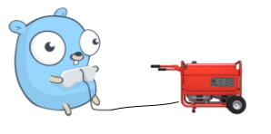

Developers have strong tendencies to automate repetitive tasks, and this applies to writing code as well. Therefore, the topic of metaprogramming is a hot area of development and research, and hails back to Lisp in the 1960s. One specific aspect of metaprogramming that has been particularly useful is code-generation, or writing programs that emit other programs, or parts of themselves. Languages that support macros have this capability built-in; other languages extend existing features to support this (e.g. C++ template metaprogramming).
While Go does not have macros or other forms of metaprogramming, it's a pragmatic language and it embraces code generation with support in the official toolchain.
The go generate command has been introduced all the way back in Go 1.4, and since then has been widely used in the Go ecosystem. The Go project itself relies on go generate in dozens of places; I'll do a quick overview of these use cases later on in the post.
The basics
Let's start with some terminology. The way go generate works is an orchestration between three major players:
- Generator: is a program or a script that is invoked by go generate. In any given project multiple generators may be invoked, a single generator can be invoked multiple times, etc.
- Magic comments: are comments formatted in a special way in .go files that specify which generator to invoke and how. Any comment that starts at the very beginning of the line with the text //go:generate qualifies.
- go generate: is the Go tool that reads Go source files, finds and parses magic comments and runs the generators, as specified.
It's very important to emphasize that the above is the whole extent of automation Go provides for code generation. For anything else, the developer is free to use whatever workflow works for them. For example, go generate should always be run manually by the developer; it's never invoked automatically (say as part of go build). Moreover, since with Go we typically ship binaries to users or execution environments, it is well understood that go generate is only run during development (likely just before running go build); users of Go programs shouldn't know whether parts of the code are generated and how.
This applies to shipping modules as well; go generate won't run the generators of imported packages. Therefore, when a project is published, whatever generated code is part of it should be checked in and distributed along with the rest of the code.
A simple example
Learning is best done by doing; to this end, I created a couple of simple Go projects that will help me illustrate the topics explained by this post. The first is samplegentool, a basic Go tool that's intended to simulate a generator. Here's its entire source code:
package main
import (
"fmt"
"os"
)
func main() {
fmt.Printf("Running %s go on %s\n", os.Args[0], os.Getenv("GOFILE"))
cwd, err := os.Getwd()
if err != nil {
panic(err)
}
fmt.Printf(" cwd = %s\n", cwd)
fmt.Printf(" os.Args = %#v\n", os.Args)
for _, ev := range []string{"GOARCH", "GOOS", "GOFILE", "GOLINE", "GOPACKAGE", "DOLLAR"} {
fmt.Println(" ", ev, "=", os.Getenv(ev))
}
}
This tool doesn't read any code and doesn't write any code; all it does is carefully report how it's invoked. We'll get to the details shortly. Let's first examine another project - mymod. This is a sample Go module with 3 files split into two packages:
$ tree
.
├── anotherfile.go
├── go.mod
├── mymod.go
└── mypack
└── mypack.go
The contents of these files are fillers; what matters is the go:generate magic comments in them. Let's take the one in mypack/mypack.go for example:
//go:generate samplegentool arg1 "multiword arg"
We see that it invokes samplegentool with some arguments. To make this invocation work, samplegentool should be found somewhere in PATH. This can be accomplished by running go build in the samplegentool project to build the binary and then setting PATH accordingly [1]. Now, if we run go generate ./... in the root of the mymod project, we'll see something like:
$ go generate ./...
Running samplegentool go on anotherfile.go
cwd = /tmp/mymod
os.Args = []string{"samplegentool", "arg1", "arg2", "arg3", "arg4"}
GOARCH = amd64
GOOS = linux
GOFILE = anotherfile.go
GOLINE = 1
GOPACKAGE = mymod
DOLLAR = $
Running samplegentool go on mymod.go
cwd = /tmp/mymod
os.Args = []string{"samplegentool", "arg1", "arg2", "-flag"}
GOARCH = amd64
GOOS = linux
GOFILE = mymod.go
GOLINE = 3
GOPACKAGE = mymod
DOLLAR = $
Running samplegentool go on mypack.go
cwd = /tmp/mymod/mypack
os.Args = []string{"samplegentool", "arg1", "multiword arg"}
GOARCH = amd64
GOOS = linux
GOFILE = mypack.go
GOLINE = 3
GOPACKAGE = mypack
DOLLAR = $
First, note that samplegentool is invoked on each file in which it appears in a magic comment; this includes sub-directories, because we ran go generate with the ./... pattern. This is really convenient for large projects that have many generators in various places.
There's a lot of interesting stuff in the output; let's dissect it line by line:
- cwd reports the working directory where samplegentool is invoked. This is always the directory where the file with the magic comment was found; this is guaranteed by go generate, and lets the generator know where it's located in the directory tree.
- os.Args reports the command-line arguments passed to the generator. As the output above demonstrates, this includes flags as well as multi-word arguments surrounded by quotes.
- The env vars passed to the generator are then printed out; see the official documentation for a full explanation of these. The most interesting env vars here are GOFILE which specify the file name in which the magic comment was found (this path is relative to the working directory) and GOPACKAGE that tells the generator which package this file belongs to.
What can generators do?
Now that we have a good understanding of how generators are invoked by go generate, what can they do? Well, in fact they can do anything we'd like. Really. Generators are just computer programs, after all. As mentioned earlier, generated files are typically checked into the source code as well, so generators may only need to run rarely. In many projects, developers won't run go generate ./... from the root as I did in the example above; rather, they'll just run specific generators in specific directories as needed.
In the next section I will provide a deep dive of a very popular generator - the stringer tool. In the meantime, here are some tasks the Go project itself uses generators for (this is not a full list; all uses can be found by grepping go:generate in the Go source tree):
- The gob package uses generators to emit repetitive helper functions for encoding/decoding data.
- The math/bits package uses a generator to emit fast lookup tables for some of the bitwise operations it provides.
- Several crypto packages use generators to emit hash function shuffle patterns and repetitive assembly code for certain operations.
- Some crypto packages also use generators to grab certificates from specific HTTP URLs. Obviously, these aren't designed to be run very frequently...
- net/http is using a generator to emit various HTTP constants.
- There are several interesting uses of generators in the Go runtime's source code, such as generating assembly code for various tasks, lookup tables for mathematical operations, etc.
- The Go compiler implementation uses a generator to emit repetitive types and methods for IR nodes.
In addition, there are at least two places in the standard library that use generators for generics-like functionality, where almost duplicate code is generated from existing code with different types. One place that does this is the sort package [2], and the other is the suffixarray package.
Generator deep-dive: stringer
One of the most commonly used generators in Go projects is stringer - a tool that automates the creation of String() methods for types so they implement the fmt.Stringer interface. It is most frequently used to generate textual representations for enumerations.
Let's take an example from the standard library (math.big package); specifically, the RoundingMode type, which is defined as follows:
type RoundingMode byte
const (
ToNearestEven RoundingMode = iota
ToNearestAway
ToZero
AwayFromZero
ToNegativeInf
ToPositiveInf
)
At least up to Go 1.18, this is an idiomatic Go enumeration; to make the names of these enum values printable, we'll need to implement a String() method for this type that would be a kind of switch statement enumerating each value with its string representation. This is very repetitive work, which is why the stringer tool is used.
I've replicated the RoundingMode type and its values in a small example module so we can experiment with the generator more easily. Let's add the appropriate magic comment to the file:
//go:generate stringer -type=RoundingMode
We'll discuss the flags stringer accepts shortly. Let's be sure to install it first:
$ go install golang.org/x/tools/cmd/stringer@latest
Now we can run go generate; since in the sample project the file with the magic comment lives in a sub-package, I'll just run this from the module root:
$ go generate ./...
If everything is set up properly, this command will complete successfully without any standard output. Checking the contents of the project, you'll find that a file named roundingmode_string.go has been generated, with these contents:
// Code generated by "stringer -type=RoundingMode"; DO NOT EDIT.
package float
import "strconv"
func _() {
// An "invalid array index" compiler error signifies that the constant values have changed.
// Re-run the stringer command to generate them again.
var x [1]struct{}
_ = x[ToNearestEven-0]
_ = x[ToNearestAway-1]
_ = x[ToZero-2]
_ = x[AwayFromZero-3]
_ = x[ToNegativeInf-4]
_ = x[ToPositiveInf-5]
}
const _RoundingMode_name = "ToNearestEvenToNearestAwayToZeroAwayFromZeroToNegativeInfToPositiveInf"
var _RoundingMode_index = [...]uint8{0, 13, 26, 32, 44, 57, 70}
func (i RoundingMode) String() string {
if i >= RoundingMode(len(_RoundingMode_index)-1) {
return "RoundingMode(" + strconv.FormatInt(int64(i), 10) + ")"
}
return _RoundingMode_name[_RoundingMode_index[i]:_RoundingMode_index[i+1]]
}
The stringer tool has multiple codegen strategies, depending on the nature of the enumeration values it's invoked on. Our case is the simplest one with a "single consecutive run" of values. stringer will generate somewhat different code if the values form multiple consecutive runs, and yet another version if the values form no run at all. For fun and education, study the source of stringer for the details; here let's focus on the currently used strategy.
First, the _RoundingMode_name constant is used to efficiently hold all string representations in a single consecutive string. _RoundingMode_index serves as a lookup table into this string; for example let's take ToZero, which has the value 2. _RoundingMode_index[2] is 26, so the code will index into _RoundingMode_name at index 26, which leads us to the ToZero part (the end is the next index, 32 in this case).
The code in String() also has a fallback in case more enum values were added but the stringer tool was not rerun. In this case the value produced will be RoundingMode(N) where N is the numeric value.
This fallback is useful because nothing in the Go toolchain guarantees that generated code will remain in sync with the source; as mentioned before, running the generators is entirely the developer's responsibility.
What about the odd code in func _() though? First, notice that it literally compiles to nothing: the function doesn't return anything, has no side effects and isn't invoked. The goal of this function is to serve as a compilation guard; it's an extra bit of safety in case the original enum changes in a way that's fundamentally incompatible with the generated code, and the developer forgets to rerun go generate. Specifically, it will protect against existing enum values being modified. In this event, unless go generate was rerun, the String() method may succeed but produce completely wrong values. The compilation guard tries to catch this case by having code that will fail to compile an out-of-bounds array lookup.
Now let's talk a bit about how stringer works; first, it's instructional to read its -help:
$ stringer -help
Usage of stringer:
stringer [flags] -type T [directory]
stringer [flags] -type T files... # Must be a single package
For more information, see:
https://pkg.go.dev/golang.org/x/tools/cmd/stringer
Flags:
-linecomment
use line comment text as printed text when present
-output string
output file name; default srcdir/<type>_string.go
-tags string
comma-separated list of build tags to apply
-trimprefix prefix
trim the prefix from the generated constant names
-type string
comma-separated list of type names; must be set
We've used the -type parameter to tell stringer which type(s) to generate the String() method for. In a realistic code base one may want to invoke the tool on a package that has a number of types defined within it; in this case, we likely want stringer to produce String() methods for only specific types.
We haven't specified the -output flag, so the default is used; in this case, the generated file is named roundingmode_string.go.
Sharp-eyed readers will notice that when we invoked stringer, we didn't specify what file it's supposed to use as input. A quick scan of the tool's source code shows that it doesn't use the GOFILE env var either. So how does it know which files to analyze? It turns out that stringer uses golang.org/x/tools/go/packages to load the whole package from its current working directory (which, as you recall, is the directory the file containing the magic comment is in). This means that no matter what file the magic comment is in, stringer will analyze the whole package by default. If you think about it for a moment, it makes sense because who said that the constants have to be in the same file as the type declaration, for instance? In Go, a file is just a convenient container for code; a package is the real unit of input the tooling cares about.
In-source generators and build tags
So far we've assumed that the generator is somewhere in PATH while go generate is running, but this may not always be the case.
Consider a very common scenario where your module has its own generator that's only useful for this specific module. When someone is hacking on the module, you'd like them to be able to clone the code, run go generate and go build, etc. However, if magic comments assume that generators are always in PATH this won't work unless the generators are built and properly pointed to before running go generate.
The solution in Go is simple because of go run, which is a perfect match for running generators that are just .go files somewhere in the module's tree. A simple example is available here. This is a package file with a magic comment:
package mypack
//go:generate go run gen.go arg1 arg2
func PackFunc() string {
return "insourcegenerator/mypack.PackFunc"
}
Notice how the generator is invoked here: with go run gen.go. This means that go generate will expect to find gen.go in the same directory as the file containing the magic comment. The contents of gen.go are:
//go:build ignore
package main
import (
"fmt"
"os"
)
func main() {
// ... same main() as the simple example at the top of the post
}
It's just a small Go program (in package main). The only thing of note is the //go:build constraint that tells the Go toolchain to ignore this file when building the project [3]. Indeed, gen.go is not a part of the package; it's in package main itself and is intended to be run with go generate instead of being compiled into the package.
The standard library has many examples of small programs intended to be invoked with go run that serve as generators.
The typical pattern is that 3 files are involved in code generation, and these all coexist in the same directory/package:
- The source file contains some of the package's code, along with a magic comment to invoke a generator with go run.
- The generator, which is a single .go file with package main; this generator is invoked by the go run in a magic comment from the source file to produce the generated file. The generator .go file will typically have a //go:build ignore constraint to exclude it from the build of the package itself.
- The generated file is emitted by the generator; in some conventions it would have the same name as the source file, but followed by _gen (like pack.go --> pack_gen.go); alternatively it could be some sort of prefix (like gen). The code in the generated file is in the same package as the code in the source file. In many cases, the generated file contains some implementation details as unexported symbols; the source file can refer to this in its code because the two files are in the same package.
Of course, none of this is mandated by the tooling - it just describes a common convention; specific projects can be set up in a different way (where a single generator emits code for multiple packages, for example).
Advanced features
This section discusses some of the advanced or lesser used features of go generate.
The -command flag
This flag lets us define aliases for go:generate lines; this could be useful if some generator was a multi-word command that we wanted to shorten for multiple invocations.
The original motivation was likely to shorten go tool yacc to just yacc with:
//go:generate -command yacc go tool yacc
After which yacc could be invoked multiple times with just this 4-letter name instead of three words.
Interestingly, go tool yacc was removed from the core Go toolchain in 1.8, and I haven't found any usage of -command in either the main Go repository (outside of testing go generate itself) or the x/tools modules.
The -run flag
This flag is for the go generate command itself, used to select which generators to run. Recall our simple example where we had 3 invocations of samplegentool in the same project. We can select only one of them to run with the -run flag:
$ go generate -run multi ./...
Running samplegentool go on mypack.go
cwd = /tmp/mymod/mypack
os.Args = []string{"samplegentool", "arg1", "multiword arg"}
GOARCH = amd64
GOOS = linux
GOFILE = mypack.go
GOLINE = 3
GOPACKAGE = mypack
DOLLAR = $
The utility of this should be obvious for debugging: in a large project with multiple generators, we often want to run only a subset for debugging / quick edit-run loop purposes.
DOLLAR
Of the env vars auto-magically passed into generators, one stands out - DOLLAR. What is it for? Why dedicate an env var to a character? There is no use of this env var in the Go source tree.
The origin of DOLLAR can be traced to this commit by Rob Pike. As the change description says, the motivation here is passing the $ char into a generator without complicated shell escaping. This is useful if go generate invokes a shell script or something that takes a regexp as an argument.
The effect of DOLLAR can be observed with our samplegentool generator. If we change one of the magic comments to:
//go:generate samplegentool arg1 $somevar
The generator reports its arguments to be
os.Args = []string{"samplegentool", "arg1", ""}
This is because $somevar is interpreted by the shell as referencing the somevar variable, which doesn't exist so its default value is empty. Instead we can use DOLLAR as follows:
//go:generate samplegentool arg1 ${DOLLAR}somevar
And then the generator reports
os.Args = []string{"samplegentool", "arg1", "$somevar"}
| [1] | An alternative approach is place a link to samplegentool in the GOBIN directory. If your GOBIN is not set, it defaults to GOPATH/bin. If GOPATH is not set either (which is what I do, since I'm all in on modules), it should be in $HOME/go/bin. |
| [2] | The sort package is a very interesting example, because it actually parses the code of the package using go/parser and go/ast and uses that as a basis for generating an alternative version. This approach may change with CL 353069, though. |
| [3] | Looking at real-world examples of build constraints you'll likely see // +build ignore instead. This is the older syntax which was superseded by the go:build syntax in Go 1.17. For the time being, most generators will likely include both kinds of constraints, to support building with Go 1.16 and earlier, as well as future-proofing for upcoming releases. |